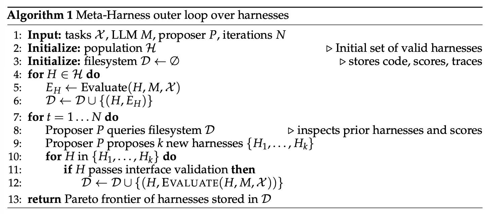
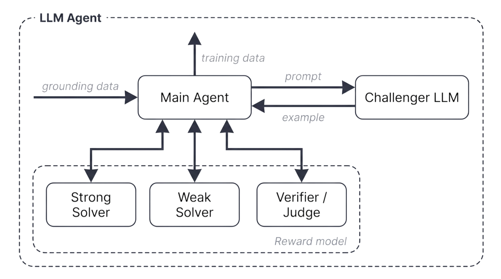
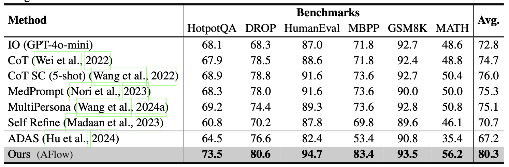
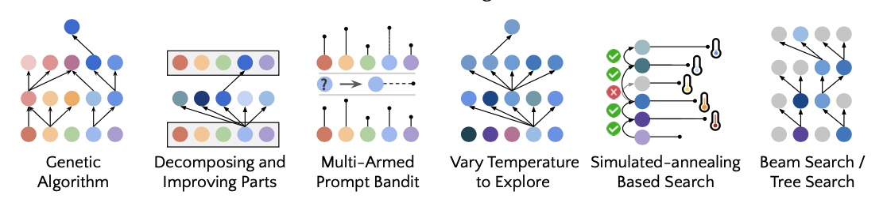

The concept of recursive self-improvement (RSI) dates back to I. J. Good (1965), where he defined an “ultraintelligent machine” as a system that can surpass humans in all intellectual activities and design better machines to improve itself. Yudkowsky (2008) used the phrase “recursive self-improvement” for a specific feedback loop: an AI uses its current intelligence to improve the cognitive machinery that produces its intelligence.
This feedback loop in modern AI may indicate the model rewriting its own weights directly, or more broadly the model improves the training pipeline and the deployment system, which in turn enables a better successor model with improved performance across economically valuable tasks. The speed of research development in AI has been shown to drastically accelerated in frontier labs (Anthropic; OpenAI).
I explicitly mention “deployment system” because the layer between the raw model and the real-world context seems to be as important as the model’s raw intelligence (i.e. the evals right after pretraining). Harnesses are important components of AI deployment, as shown by successful coding agent products such as Claude Code and Codex. A harness is the system surrounding a base model that orchestrates execution and decides how the model thinks and plans, calls tools and acts, perceives and manages context, stores artifacts, and evaluates results.
This one post will focus on research around harness engineering and how it contributes to RSI. Much recent work on auto-research, self-improving agents, and evolutionary program search can be organized around this question. Other work on model self-play, synthetic data, test-time training and a broader theme of continual learning also matches the RSI vision (e.g. Yuan et al. 2024, Chen et al. 2024), Zhao et al. 2025, Choi et al. 2026)) but they will not be the focus of this post.
Harness Design Patterns
Compared with early agent frameworks, “agent = LLM + memory + tools + planning + action”, harnesses engineering additionally include workflow design (e.g. loop engineering), evaluation, permission controls, and persistent state management. It is no longer only prompt templates, but closer to runtime and software system design: how the model observes, acts, memorizes, checks itself, and improves.
The design should be deliberately simple and generic to enable generalization, likely with reference to existing software engineering practices to benefit from pretraining knowlege. There is also a strong analogy between operating systems and harnesses. Similar to an OS, a harness should encapsulate complicated logic while keeping the interface simple. Meanwhile, configs, tool interfaces and other protocols may gradually become standardized across the industry.
Pattern 1: Workflow Automation
Defining a workflow in which the model can operate, test, and iterate is a key design for automation. Karpathy’s autoresearch repo (https://github.com/karpathy/autoresearch) is a clean example of how such a workflow can be constructed. A common workflow follows a goal-oriented loop of plan, execute, observe/test, improve, and execute again until the goal is achieved. The process may trigger proactive requests to users for clarity in task specification or execution preference.

(Image source: OpenAI codex agent post)
The workflow graph also emphasizes the model analyzing its own trajectories and failure cases and then iterating on its progress through an “agent runtime” rather than a static prompt template.
Pattern 2: File System as Persistent Memory
A recurring pattern in long-horizon agent systems is simple control over rich states and artifacts. A harness should not carry the entire workflow and all logs in context; instead, it should keep durable state in files. In long-horizon agentic rollout, artifacts such as experiment logs, code diffs, paper summaries, error traces, and past rollout trajectories often grow much longer than the context window that the model has trained for.
Learning how to read, write, and edit the file system (commonly via bash commands) is a foundation skill for LLMs, and thus managing persistent memory in the simple form of files naturally benefits from improvements in core model capability.
Pattern 3: Sub-agent and Backend Jobs
A harness can spawn multiple subagents to execute in parallel and monitor backend jobs. This is useful when the main agent needs to search multiple hypotheses, run experiments concurrently, or delegate isolated subtasks without polluting the main context. The parent agent then needs a small process manager: launch jobs, inspect logs, cancel failed runs, and merge results back into the main agent thread.
The key design choice is to make parallelism explicit and inspectable. If subagent outputs only live in a transient chat context, they quickly become obselete and hidden. If they are stored as files, logs, and status records, the model can recover after interruptions and reason over its own execution history.
Case study: Coding Agent Harness
The core interface of mainstream coding agents has become stabilized across Claude Code, Codex, OpenCode, and Cursor-style agents. They commonly use a loop like:

With access to a set of tools, the coding agent is able to develop and debug issues in a given repository, similar to how human developers are equipped with IDEs.
(Not a comprenhensive list; shown for demonstration. Read this if interested.)
| Group | Tool definitions |
|---|---|
| File system | - File discovery: glob, grep, ls- File read: read, read_many- File modification: write (a whole new file); edit (string exact-match replacement); multi_edit; apply_patch (applies a structured patch/diff) |
| Shell execution | Run commands: bash, PowerShell |
| IO | lsp, git tools like git_status, git_diff, git_commit |
| External context | MCP tools, Skills |
| Web search | web_search, web_fetch, browser tools |
| Artifacts | Read docs, images; generate HTML, images |
| Backend processes | Such as: CronCreate, CronDelete, CronList |
| Agent delegation | Such as: spawn_agent, resume_agent, wait_agent, list_agents, close_agent, interrupt_agent, etc. |
Harness Layer vs Core Intelligence?
It is hard to forecast how much the future of RSI will rely on harness engineering, but the near-term path of RSI is unlikely to start as a model directly rewriting its weights. My prediction of a practical near-term path is:
- Harness engineering will evolve in the direction of meta-methodology (i.e. improving the machinery for getting better answers, not just improving the answer itself). The harness system itself becomes an optimization target, with fewer heuristic rules and more general mechanisms.
- In turn, mature harnesses enable auto-research for model self-improvement loop and smarter models prevents harnesses from overengineering and keep the system sustainable.
Eventually it is possible that many harness improvements will be internalized into core model behavior, but the interface with external context and tools should remain. We have seen a softer version of this pattern with prompt engineering: manual prompt tricks became less central as instruction tuning and model reasoning improved, but the need to specify goals, constraints, context, and evaluation did not disappear.
Harness Optimization
The progression in the object being optimized in the harness system is roughly: instruction prompts → structured context → workflow → harness code → optimizer code. As the model becomes more intelligent and powerful, we move toward more complex targets and generic methods.
Context Engineering
Simply appending all the tool responses and model generations into the context can quickly grow out of control as the agentic job horizon increases significantly. Context management is a layer to construct a more structed and concise context for LLM and manage persistant states. There is no doubt that long-context research will keep on making progress but at the moment long-context intelligence and context engineering sometime intertwines.
Agentic Context Engineering (ACE; Zhang et al. 2025) treats context as an evolving playbook rather than an increasingly lengthening prompt. It has three components to maintain one context playbook of bullet points, each with an identifier and a description.
- Generator: produces task trajectories, with reference to bullet points.
- Reflector: distills insights from successful and failed trajectories.
- Curator: updates the structured context with incremental, itemized entries.

To prevent context collapse and brevity bias during iterative rewrites, one key design choice in ACE is that the curator does not rewrite a full prompt blob. It instead outputs a collection of structured, itemized bullets in the form of (identifier, description), and these bullets are merged into a structured context logbook with deterministic logic. The context items are refined and deduplicated periodically.
The fact that ACE learns insights from rollouts helps us move toward self-managed memory, but the update rules and the overall workflow are still handcrafted. To move toward a more self-improving loop, Meta Context Engineering (MCE; Ye et al. 2026) separates the mechanism (how to manage context) from the artifact content (what is in context), running skill evolution at the meta-optimization level and context optimization at the base level.
An MCE skill $s \in \mathcal{S}$ defines a context function $c_s=(\rho_s,F_s)$ and maps an input $x$ to context $c = F_s(x;\rho_s)$, where:
- $\rho_s = \{\rho_1,\dots,\rho_m\}$ are static components (prompts, knowledge bases, code libraries).
- $F_s = \{F_1,\dots,F_k\}$ are dynamic operators (search, selection, filtering, formatting).
The bi-level optimization is to find the best context $c_s^*$ given skill $s$ on the training data, while the outer loop finds the optimal skill that provides the best performance on the validation set:
The skill database tracks the history of previous skills, context functions and eval metrics $\mathcal{H}_{k-1} = \{(s_i,c_i,J_i^\text{train}, J_i^\text{val})\}_{i=1}^{k-1}$. A meta-level agent performs agentic crossover over prior skills to create a new skill given a task $\tau$: $s_k=\text{crossover}(\tau,\mathcal{H}_{k-1})$.
Then a base-level context engineer executes the skill $s_k$ and learns the context function from rollout feedback $\mathcal{R}_k$, guided by the current skill: $c_k=\text{engineer}(\tau,s_k;c_{k-1}^*,\mathcal{R}_k)$.

MCE does not enforce a heuristic rule for how to structure context as ACE does. It uses free-form skills to store the most important knowledge for a task, and evolves the skill and the skill-conditioned context iteratively together. Implementation-wise, a context function $c$ is instantiated as a collection of files in a dedicated directory, including both static (skill.md) and dynamic (context and data rollouts) components. Both meta-level and base-level optimization are executed in agentic coding envs with a standard tool set,
Meta-Harness (Lee et al. 2026) moves another level deeper: the optimized object is the code that determines and optimizes what information should be stored, retrieved, and presented to the model. “Meta-” in its name means it is a harness for optimizing harnesses.

The proposer for creating a new harness is itself a coding agent and the final output is a collection of harness candidates on the Pareto frontier.
- The entire execution history is accessible via a file system, and thus the coding agent uses commands like
greporcatto read through it instead of shoveling everything into a single prompt context. - The proposed harness is a dictionary in the file system containing its own source code, scores, rollout trajectories, and state updates.
- The mete-harness loop iteratively creates new harnesses, and only qualified ones are kept.

Still, the important lesson is clear: once harness design becomes an executable search space, a strong coding agent can exploit the same design space human engineers use.
Workflow Design
Workflow design in harness engineering can be handcrafted by domain experts. Taking auto-research as an example, various frameworks have been proposed and tested. The AI Scientist system (Lu et al. 2026) builds a pipeline to propose research ideas, write code, run experiments, analyze results, write a manuscript, and perform peer review. Meng et al. (2026) make verifiability the central design constraint in ScientistOne, where every claim (citation, numerical, methodological, conclusion) must trace to an evidence source and is audited by Chain-of-Evidence checks.

The Autodata agent (Kulikov et al. 2026) is designed to work as a data scientist for generating training and evaluation data. The main agent manages a challenger that proposes problems, a weak solver, a strong solver, and a verifier/judge, aiming to synthesize data at the “just right” level of difficulty, meaning that the strong solver succeeds but the weak solver fails.
In Autodata, the challenger prompt is updated iteratively according to feedback from the solvers and verifier. The limitation here is that synthesized tasks are used to fine-tune weak solvers but not strong solvers; if the loop cannot iteratively improve the strong model, it is more like indirect distillation over a generated prompt distribution, with less RSI flavor.

The design space for workflow is enormous, and naturally we can think of workflow design as a search problem, and therefore we should be able to find good solutions by algorithms rather than only manually craft them. Following this direction, Automated Design of Agentic Systems (ADAS; Hu et al. 2025) formulates agent design itself as an optimization problem, “meta-agent search” where a meta-agent proposes new designs of agentic workflows.
- Initialize an archive of agentic workflows with simple agents such as CoT and self-refine.
- Ask a meta-agent to program new agents, all in code, inspired by existing solutions in the archive.
- The meta-agent first generates a high-level description of the new workflow, and then implements it in code.
- The draft program then goes through two self-refine steps (i.e. ask the model to provide feedback and then ask the same model to refine the previously generated outputs based on the feedback; Madaan et al. 2023) by the meta-agent to check its novelty.
- Evaluate each new candidate and add successful ones back to the archive.
- Repeat steps 2-3 until the maximum iteration count is reached.

(Image source: Hu et al. 2025)
AFlow (Zhang et al. 2025) represents an agentic workflow as a graph, where nodes represent LLM-invoking actions and edges implement logical operations in code. The workflow optimization relies on MCTS (Monte Carlo Tree Search):
- Initialize the starting workflow $W_0$ in the tree with a template.
- Select a workflow node using a soft mixture of score and uniform exploration.
- Expand it by asking an LLM to produce a modified workflow conditioned on its evaluation performance.
- Execute and evaluate the new workflow.
- Add it back to the tree if the new workflow shows improvement within a budget of $N$ rounds.
- Repeat steps 2-5 and stop when the top-$k$ average score plateaus or hit the budget.

Experiments of AFlow in QA, code, and math tasks showed decent improvement of AFlow over manually designed workflows and ADAS.

Self-Improving Harness
Either context engineering or workflow design is only one part of a harness. We need to search through the entire design space and optimize context-management logic, workflow, permissions, and many other harness components together. As we have seen in work like Meta-Harness, ADAS, and AFlow, ✨code✨ is a universal language for defining programs and systems. In simple words, a harness is code that programs how prompts, tool calls, subagents, control flow, memory, and workflow logic work together. If an LLM can optimize the code that executes agents, it can access a much larger design space than hand-written prompts.
Self-Taught Optimizer (STOP; Zelikman et al. 2023) is one of the early examples of recursive scaffolding improvement. A seed improver $I_0$ at step $t=0$ takes an initial solution $s$, a utility function $u$, and a black-box language model $M$, and returns an improved solution $s’$, that is, $s’ = I(u, s; M)$. The goal of STOP is not directly to improve $s$ but to improve the improver $I$ itself.
First, let’s define the meta-utility as the average utility of a given improver function $I$ over a collection of downstream tasks $\mathcal{D}$:
Because improving the improver function is an optimization problem itself, we can recursively get a new version of $I_t$ based on $I_{t-1}$’s performance measured by meta-utility via a self-improvement update:

In Zelikman et al. (2023)’s experiments, the improved improver discovered various strategies, such as genetic algorithms, decomposing and improving parts, multi-armed prompt bandits, simulated annealing, varying temperature, and beam/tree search. This is analogous to how a harness workflow can be represented as an object for optimization.

A cautionary result in their findings is that STOP improved mean downstream performance across iterations with GPT-4 but degraded with weaker models like GPT-3.5 and Mixtral. Recursive structure alone is not enough. The base model must be capable enough to improve the mechanism. This implies that harness improvement enables better deployment of the model but intelligence is still the core.
A more recent work, Self-Harness (Zhang et al. 2026), relies on LLM agents to improve their own harness via a propose-evaluate-accept loop.

The loop in Self-Harness has three stages:
- Weakness mining: cluster failures into verifier-grounded failure patterns.
- The current harness $h_t$ is used to evaluate on tasks and execution traces are collected for analysis.
- Note that two runs can share the same verifier outcome in the error logs on the surface, such as timeout or missing artifact, while having different causal mechanisms. Therefore we need a failure record of rich information, containing the terminal verifier-level cause, the causal status of the relevant agent behavior, and the abstract agent mechanism exposed by the trace, to uncover the root causes.
- Harness proposal: propose bounded harness edits based on mined failure patterns.
- The same model is invoked under $h_t$ as a proposer.
- The model is provided with a bounded proposal context: (1) the editable surfaces of the current harness, (2) the verifier-grounded failure patterns from the evaluation system, (3) records of passing behaviors that should be preserved, and (4) summaries of previously attempted edits.
- Harness edits should prefer recurrent error patterns that are addressable (e.g. not task-specific difficulty) and can be resolved by narrow changes.
- Harness edit candidates should be distinct and diverse.
- Proposal validation: validate and merge qualified edits to create a new harness $h_{t+1}$.
- Candidate edits are evaluated by regression tests on held-in $D_\text{in}$ (for testing whether the weakness is resolved) and held-out $D_\text{out}$ (for checking whether other unknown issues were introduced) splits.
- Candidates are accepted only if they have no regression on both held-in and held-out data.
- Accepted candidates are merged to update the harness to $h_{t+1}$, while rejected candidates are logged without changing the active harness.
When running MiniMax M2.5, Qwen3.5-35B-A3B, and GLM-5 on Terminal-Bench-2, Self-Harness was shown to learn model-specific harness instructions that target at different weaknesses of different base models and improve held-out pass rates.
Self-harness type of work does raise my concerns that if a program is allowed to edit the OS system, abstraction boundaries are broken. The editable surface needs to be properly designed and the permission control and security layers need to live outside this loop. All the challenges around reward hacking still remain.
Evolutionary Search
Evolutionary search is an optimization method inspired by natural selection (see my old post on evolutionary algorithm). It evolves a population of solutions by mutating them and only keeping those with high “fitness” in the crowd. Evolutionary search comes in handy when (1) the search space is extensive or weirdly shaped; and (2) it is hard to optimize directly with gradients but easy to evaluate solutions. Harness search seems to be a good fit here.
Evolutionary search has been used in prompt engineering in the past studies. Promptbreeder (Fernando et al. 2023) optimizes task-specific prompts through a rich set of mutation operations, and interestingly the mutation prompts (i.e. instructions to an LLM to mutate a task prompt) are themselves also improved through evolution. GEPA (Agrawal et al. 2025) combines reflection-based prompting with evolutionary search and uses natural language reflection over trajectories of trial and error to propose prompt updates.
Novikov et al. (2025) introduced AlphaEvolve as a coding-agent evolutionary search system, which stores a pool of candidate programs and prompts frozen LLMs to generate diffs for improvement. As the system repeatedly evaluates child programs and keeps successful ones, it discovers better solutions in time.

A few details matter in the design of AlphaEvolve:
- The prompt includes parent programs, results, instructions, and sometimes meta information.
- The coding agent has access to the full repo, but code regions for improvement are explicitly marked with
# EVOLVE-BLOCK-STARTand# EVOLVE-BLOCK-END. - Meta-prompt co-evolves with instructions and context as suggested by LLM, in a similar way as how we evolve solution programs.
Ablations show the evolution procedure, context in prompts, meta-prompts, full-file evolution and the use of stronger LLMs.

Recent variants such as ThetaEvolve (Wang et al. 2025) combines evolutionary search with RL and in-context learning. ShinkaEvolve (Lange et al. 2025), on the other hand, introduced three new components to improve LLM sampling efficiency:
- More sample-efficient exploration by designing parent sampling to balance performance rank and offspring count.
- Code-novelty rejection sampling by discarding candidates that are too similar to the existing population based on embedding-based cosine similarity.
- Identifying good patterns in successful solutions in a meta-scratchpad to guide future mutation.
Unlike the methods above, which focus on solution improvement, Darwin Gödel Machine (DGM; Zhang et al. 2025) explicitly targets the evolution of an editable harness-code repository with an LLM-based coding agent. Precisely, this agent is allowed to modify its own harness. A follow-up work on Hyperagents (Zhang et al. 2026) introduced a meta-agent to control how to modify existing task agents to create new ones.
- Start with one coding agent in the pool.
- In each iteration, pick one parent with a probability proportional to its performance and inversely to the number of children it has, to modify and branch off to produce new agents.
- The selected parent agent examines its own benchmark evaluation log and then proposes improvements to its own harness codebase to generate a new version of the coding agent. Code editing is implemented with two basic tools: (1) bash (args:
<bash_command>) and (2) editor (args:view/create/edit <file_path>). - New coding agents are evaluated, and only those with sufficiently high performance are added back into the pool.
- Repeat steps 2-4 until some stop criteria hit.
DGM is harness evolution under a fixed model. In experiments with Claude 3.5 Sonnet as the base LLM and simple initial harness configs, the DGM-discovered agents are comparable to or outperform handcrafted agents on SWE-bench Verified (20% to 50%) and Polyglot (14.2% to 30.7%).
This family of methods works well when candidate solutions are automatically evaluable and candidate fitness is easy to quantify, such as matrix multiplication, GPU kernel optimization, algorithm contests, datacenter scheduling. It struggles with domains where evaluation is slow, ambiguous, or mostly heuristic-based. The compute efficiency and effectiveness of evolution are also concerns.
Joint Optimization with Model Weights
Harness evolution changes the non-parametric system around the model. To enable full self-improvement, the model can totally be allowed to update its own weights at the same time. The weight update can be implemented via improvements in the model training pipeline or continual learning at test time. The topic of continual learning is worthy of its own post in the future.
SIA (Hebbar et al. 2026) is an early attempt to combine harness improvement and model-parameter updates in the same optimization loop, with three components in the design:
- Meta-Agent: proposes the initial harness.
- Task-Specific Agent: executes the task.
- Feedback-Agent: chooses whether to update the harness or the model weights based on recent trajectories.

There are a few confounding choices in SIA’s experiments that make the results hard to interpret. For example, the task-specific agent is much weaker than the models used for the Meta-Agent and Feedback-Agent (gpt-oss-120b vs Claude Sonnet 4.6), and the baselines are too weak to cross-reference cleanly against related methods. I would consider the direction interesting, but the evidence provisional. Yet many challenges, such as training stability and Goodhart effect, still remain open.
Future Challenges
The AI Scientist line of work is a strong demonstration that an expert-designed harness can coordinate a large portion of auto-research loop, experimented in the form of writing research papers. But paper production is not identical to scientific discovery. A system can write a plausible manuscript while still having fabricated citations, implementation drift, or weak experimental results.
Trehan & Chopra (2026) tested whether LLMs can go from a research idea to a paper with minimal scaffolding and basic tools (i.e., read_file, write_file, llm_search, list_files). Each idea had a dedicated workspace where agents could generate and read documents as part of context. They experimented in three domains (world models, multi-agent RL, AI safety & alignment), with each domain containing 45-50 high-quality seed documents to inspire new ideas. Only four ideas were selected by human experts to run through the full pipeline, and only one was fully executed into a paper. They observed six recurring failure modes in the experiments:
- Bias toward training-data defaults: use old libraries, stale commands, standard formats, or assumptions not grounded in the actual repository or dataset.
- Implementation drift under execution pressure: when implementation becomes technically complex, the model may move toward a common simpler solution rather than the proposed method.
- Memory and context degradation: long-horizon projects lose critical details unless logs are written as persistent artifacts.
- Over-optimism: the model declares success despite noisy or failed experiments, similarly observed as “p-hacking and eureka-ing” pattern by Bubeck et al. (2025) where models can introduce “numerical duct tape” and declare victory when signals are still noise.
- Insufficient domain intelligence: the model lacks tacit craft knowledge, e.g. predicting implementation complexity, judging whether an experimental result is plausible, or knowing which baselines matter.
- Weak scientific taste: experiments may be executable but fail to answer the right question.
Toward full RSI, researchers have made real progress, but several bottlenecks remain.
1. Weak and fuzzy evaluators. Many research claims do not have a fast and precise verifier, and the same is true for many real-world tasks. Current self-improvement loops work best for tasks when evaluation metrics are measurable and objective, similar as how RL works.
Research taste, novelty, and long-term scientific value are much harder to measure. For example, research taste often mixes problem framing, experimental design, and judgment about which surprising results are worth pursuing and which failure cases are worth retries.
2. Context and memory lifecycle. Memory grows as AI agents become more autonomous and independent. A useful harness needs to manage context and memory to complement existing limitation in long-context generation while still maximizing the success of long-horizon tasks. Since humans are able to maintain memory through our life time, I see an anoloy here that context engineering will and should become a core part of intelligence, rather than staying in the software system layer.
3. Negative results. Researchers are incentivized to publish successful results and thus literature is biased toward successes. LLMs trained on a vast amount of data (mostly human created, at least for now, lol) may be bad at deciding when to abandon a hypothesis, report a negative result, or even acknowledge a failure due to the imablance of success vs failure cases in data. A research harness should make failed attempts easy to preserve, as learning from failure is the best way to trim down the task search space.
4. Diversity collapse. Evolutionary and RL loops tend to exploit known high-reward patterns. We need mechanisms to prevent the population from collapsing into variants of the same solution. This is especially critical for open-ended research, where the best path may initially look worse under the current evaluator.
5. Reward hacking. A self-improvement loop optimizes whatever signal it is given. If the reward comes from unit tests, the agent may overfit to tests; if it comes from a judge model, it may learn reward hacking tricks specific to this judge; if it comes from benchmark scores, it may exploit benchmark artifacts.
The evaluator and permission control should likely sit outside the loop that evolves harness, with held-out tests, trace audits, and human review at decision points that matter—how much oversight can be scaled up and automated remains an open research area.
6. Long-term success. An extrinsic loop of optimization works on rewards outside of individual rollouts that we can simulate in training sandbox.
Take coding agent as an example. Coding agents have already increased daily productivity in software engineering, but many optimization goals are still too short-term. It can often complete the task at hand, but less obvious how it should protect the long-term health of a repo collectively maintained by hundreds or thousands of engineers. Standard sandbox-based RLVR-style training rarely captures maintainability, ownership boundaries, migration cost, backwards compatibility, or future debugging burden.
7. The role of humans. Humans should move up the stack, not be removed from the loop, meaning that human should provide oversight at the right time, at the right abstraction level and our system design should consider when and how to set up such touch points.
Many challenges listed above need human’s feedback and steering. After all, we are building the technology for better future of humanity, not other way around.
Citation
Please cite this work as:
Weng, Lilian. “Harness Engineering for Self-Improvement”. Lil’Log (Jul 2026). https://lilianweng.github.io/posts/2026-07-04-harness/
Or use the BibTeX citation:
@article{weng2026harness,
title = {Harness Engineering for Self-Improvement},
author = {Weng, Lilian},
journal = {lilianweng.github.io},
year = {2026},
month = {July},
url = "https://lilianweng.github.io/posts/2026-07-04-harness/"
}
Appendix: Some useful benchmarks
- PaperBench: replicate 20 ICML 2024 Spotlight and Oral papers from scratch, including understanding paper contributions, developing a codebase, and successfully executing experiments.
- Each replication task is decomposed into smaller, individually gradable tasks.
- 8,316 rubrics in total, co-developed with the paper authors.
- The best model at the time (
Claude 3.5 Sonnet, ~21%) does not outperform ML PhDs. - Includes PaperBench, PaperBench Code-Dev (a lighter version), and JudgeEval.
- CORE-Bench: evaluate computational reproducibility of published research.
- 270 tasks based on 90 scientific papers across computer science, social science, and medicine.
- Tasks involve reproducing results from provided code and data.
- Includes multiple difficulty levels and both language-only and vision-language tasks.
- The best reported agent at the time (
GPT-4oandGPT-4o-mini) achieved only 21% accuracy on the hardest task.
- ScienceAgentBench: evaluate LLM agents for data-driven scientific discovery.
- Extracts 102 tasks from 44 peer-reviewed publications in four disciplines (math, chemistry, biology, geography).
- Covers basic data-science tasks in these domains: data processing, model development, data analysis, and information visualization.
- RE-Bench: evaluate frontier AI agents on realistic ML research-engineering envs against human experts.
- 7 challenging, open-ended ML research-engineering environments.
- Each environment = (scoring function, starting solution, reference solution); each can be run with 8 or fewer H100 GPUs.
- Examples: optimize a kernel, run a scaling-law experiment, fix an embedding, fine-tune GPT-2 for QA, etc.
- Includes data from 71 eight-hour attempts by 61 distinct human experts.
- Human experts achieved non-zero score in 82% of 8-hour attempts; 24% matched or exceeded strong reference solutions.
- Best AI agents scored 4× higher than humans at a 2-hour budget, but humans had better returns to longer budgets and exceeded agents at 8-hour and 32-hour settings.
- MLE-bench: evaluate ML engineering agents on offline Kaggle competitions.
- Contains 75 ML-engineering competitions curated from Kaggle.
- Tests training models, preparing datasets, running experiments, and submitting predictions to grading scripts.
- Uses Kaggle public leaderboards as human baselines.
- Best setup in the paper,
o1-previewwith AIDE scaffolding, reached at least Kaggle bronze-medal level in 16.9% of competitions. - Includes resource-scaling and contamination analyses.
- KernelBench: evaluate correctness and speed for generated GPU kernels.
- 250 PyTorch tasks to evaluate whether LLM can write fast and correct kernels.
- The evaluation metric fast_p = the percentage of generated kernels that are correct and faster than baseline.
References
[1] Good, I. J. “Speculations Concerning the First Ultraintelligent Machine.” Advances in Computers, 6:31–88, 1965.
[2] Yudkowsky, Eliezer. “Recursive Self-Improvement.” LessWrong, 2008.
[3] Choi, et al. “Anchored Self-Play for Code Repair.” ICML 2026.
[4] Zhao, et al. “Absolute Zero: Reinforced Self-play Reasoning with Zero Data.” arXiv preprint arXiv:2505.03335, 2025.
[5] Yuan, et al. “Self-Rewarding Language Models.” arXiv preprint arXiv:2401.10020, 2024.
[6] Chen, et al. “Self-Play Fine-Tuning Converts Weak Language Models to Strong Language Models.” ICML 2024.
[7] Zhang, et al. “Agentic Context Engineering: Evolving Contexts for Self-Improving Language Models.” ICLR 2026.
[8] Ye, et al. “Meta Context Engineering via Agentic Skill Evolution.” arXiv preprint arXiv:2601.21557, 2026.
[9] Lee, et al. “Meta-Harness: End-to-End Optimization of Model Harnesses.” arXiv preprint arXiv:2603.28052, 2026.
[10] Lu, et al. “Towards end-to-end automation of AI research.” Nature, 651:914–919, 2026.
[11] Meng, et al. “ScientistOne: Towards Human-Level Autonomous Research via Chain-of-Evidence.” arXiv preprint arXiv:2605.26340, 2026.
[12] Kulikov, et al. “Autodata: An agentic data scientist to create high quality synthetic data.” arXiv preprint arXiv:2606.25996, 2026.
[13] Hu, Lu, and Clune. “Automated Design of Agentic Systems.” ICLR 2025.
[14] Madaan, et al. “Self-Refine: Iterative Refinement with Self-Feedback.” NeurIPS 2023.
[15] Zhang, et al. “AFlow: Automating Agentic Workflow Generation.” ICLR 2025.
[16] Zelikman, et al. “Self-Taught Optimizer (STOP): Recursively Self-Improving Code Generation.” COLM 2024.
[17] Zhang, et al. “Self-Harness: Harnesses That Improve Themselves.” arXiv preprint arXiv:2606.09498, 2026.
[18] Fernando, et al. “Promptbreeder: Self-Referential Self-Improvement Via Prompt Evolution.” arXiv preprint arXiv:2309.16797, 2023.
[19] Agrawal, A. et al. “GEPA: Reflective Prompt Evolution Can Outperform Reinforcement Learning.” arXiv preprint arXiv:2507.19457, 2025.
[20] Novikov, et al. “AlphaEvolve: A coding agent for scientific and algorithmic discovery.” arXiv preprint arXiv:2506.13131, 2025.
[21] Lange, Imajuku, and Cetin. “ShinkaEvolve: Towards Open-Ended And Sample-Efficient Program Evolution.” arXiv preprint arXiv:2509.19349, 2025.
[22] Wang, et al. “ThetaEvolve: Test-time Learning on Open Problems.” arXiv preprint arXiv:2511.23473, 2025.
[23] Zhang, et al. “Darwin Gödel Machine: Open-Ended Evolution of Self-Improving Agents.” arXiv preprint arXiv:2505.22954, 2025.
[24] Zhang, et al. “Hyperagents.” arXiv preprint arXiv:2603.19461, 2026.
[25] Yuksekgonul, et al. “Learning to Discover at Test Time.” arXiv preprint arXiv:2601.16175, 2026.
[26] Riaz, et al. “Epistemic Uncertainty for Test-Time Discovery.” arXiv preprint arXiv:2605.11328, 2026.
[27] Hebbar, et al. “SIA: Self Improving AI with Harness & Weight Updates.” arXiv preprint arXiv:2605.27276, 2026.
[28] Trehan and Chopra. “Why LLMs Aren’t Scientists Yet: Lessons from Four Autonomous Research Attempts.” arXiv preprint arXiv:2601.03315, 2026.
[29] Bubeck, et al. “Early science acceleration experiments with GPT-5.” arXiv preprint arXiv:2511.16072, 2025.
[30] Starace, et al. “PaperBench: Evaluating AI’s Ability to Replicate AI Research.” ICML 2025.
[31] Wijk, et al. “RE-Bench: Evaluating frontier AI R&D capabilities of language model agents against human experts.” ICML 2025.
[32] Chan, et al. “MLE-bench: Evaluating Machine Learning Agents on Machine Learning Engineering.” arXiv preprint arXiv:2410.07095, 2024.
[33] Chen, et al. “ScienceAgentBench: Toward Rigorous Assessment of Language Agents for Data-Driven Scientific Discovery.” ICLR 2025.
[34] Siegel, et al. “CORE-Bench: Fostering the Credibility of Published Research Through a Computational Reproducibility Agent Benchmark.” TMLR 2024.
[35] Ouyang, et al. “KernelBench: Can LLMs Write Efficient GPU Kernels?” arXiv preprint arXiv:2502.10517, 2025.